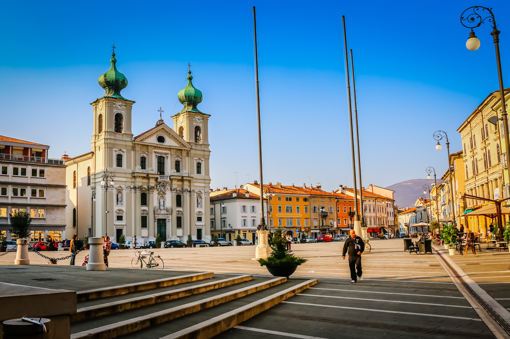
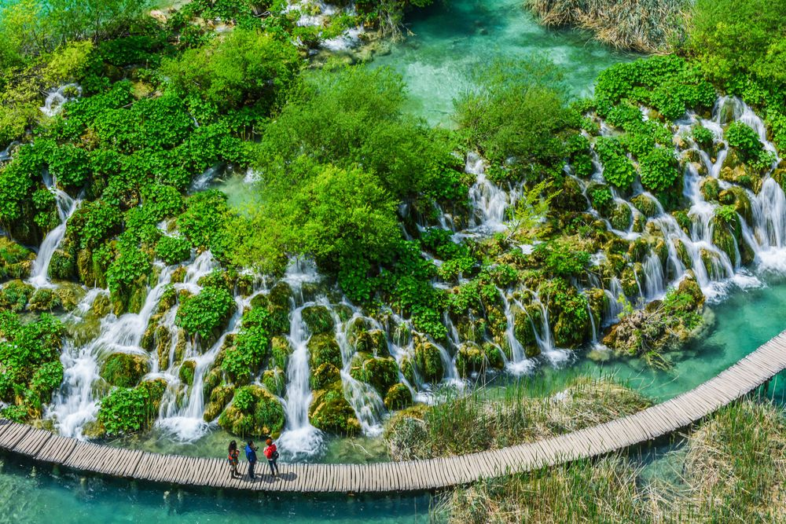
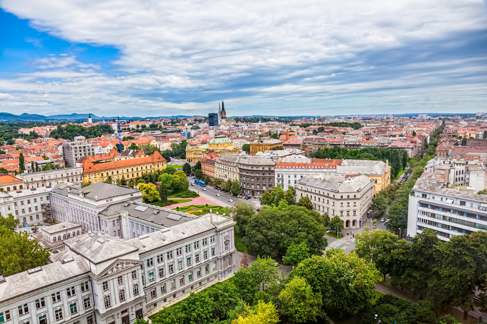
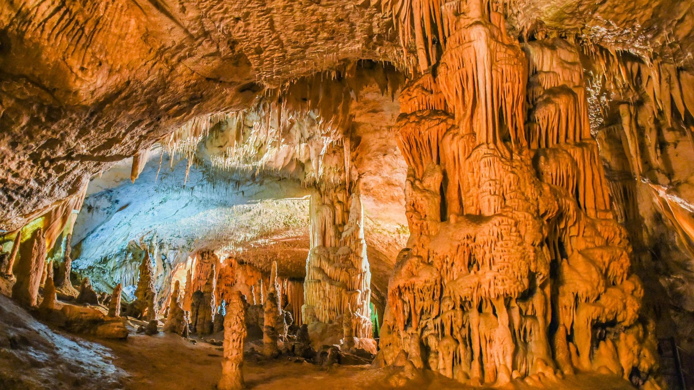

Le nostre tappe
Un percorso unico tra città storiche, coste mozzafiato e parchi naturali protetti dall'UNESCO.

Gorizia
Situata ai piedi delle Alpi Giulie, questa città è il simbolo storico del confine italo-sloveno. Abbiamo esplorato le sue piazze che uniscono culture e architetture diverse in un unico affascinante contesto locale.

Laghi di Plitvice
Un paradiso naturale composto da 16 laghi terrazzati, collegati tra loro da cascate spettacolari e passerelle in legno. È uno dei parchi nazionali più antichi, famosi e visitati di tutta l'Europa centrale.

Zagabria
La capitale croata ci ha accolto con la sua duplice anima: la Città Alta, storica e medievale con la celebre Chiesa di San Marco, e la Città Bassa, moderna e vivace, ricca di musei, parchi e ampi viali alberati.

Fiume & Postumia
A Fiume (Rijeka) abbiamo passeggiato sul Korzo ammirando l'influenza asburgica del porto. Successivamente, in Slovenia, siamo scesi nel sottosuolo delle spettacolari Grotte di Postumia a bordo del trenino storico.